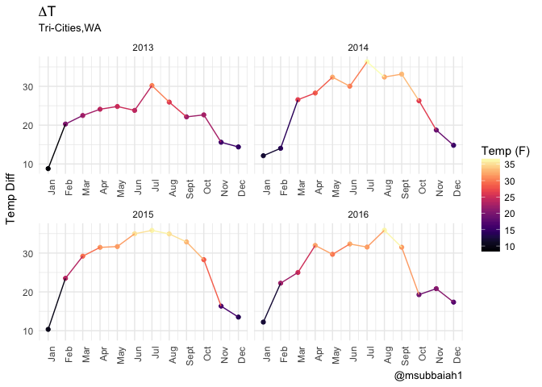
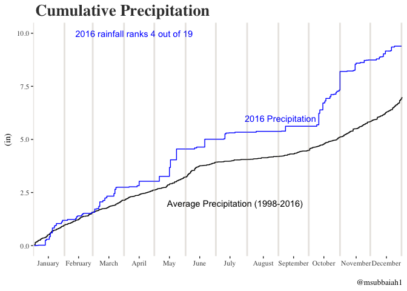

I knew when moving to Washington/the Tri-cities that while this was going to be the furthest north I had ever lived, it was also a desert. Thank god for the warmth. I interned up here in the summer of 2015, and had been up here for a week or two in the winter. However, I had never experienced a full Washington winter.
With my luck, this winter was the “worst” winter in 20 some odd years. Or so everyone claimed. A lot of people claimed that it was bad because it never warmed up fast enough for the snow to melt off. Oh you are damn right it didn’t. On top of that, right as the snow would melt off we would get more. I had to buy SNOW BOOTS to keep my feet warm outside.
In early January, I decided I was going to validate these claims about it being one of the worst winters in the Tri-Cities. This had almost slipped my mind, but thankfully a few other rweekly posts reminded me that I needed to finish this. Let’s take a look.
Note: For weather data see either the NCDC or CDIAC (ORNL).
Average Temperature
Here is the temperature distribution and how it has changed over the last four years.
So looking at the past few years up until 2016, there is a gradual decrease near the end of the year into the winter months. However, this past year it seems that there has been a drastic temperature drop into the winter months. It’s also important to note that it was warm for a bit longer than normal.
I’ve thought a few times about plotting the average temperatures per month, over the course of the last 4 years. Sadly that would be misleading. Since the Tri-Cities is in a desert, the temperature drops drastically once the sun sets. We can however look at the average temperature difference per month.

In the last two years there has been a drastic drop in temperature swings from September to November. However from 2013 to 2014, the temperature swings took gradual drops from September onwards.
I am not claiming to be a meteorologist, but it is well known that during the winter months, there is a shorter period of sunlight. Thus, it intuitively makes sense for there to be a smaller temperature difference during the winter months than the rest of the year.
Tufte Themed Weather Plot
Edward Tufte is famous for his work in data visualization. If you haven’t heard of him, I suggest checking his work out. You’ll see very shortly why his work is great.
In my search for how to visualize these weather plots, I ran into Brad Boehmke’s work on replicating a Tufte visualization. This was extremely helpful in replicating the tufte plots.
Well, look at that. I’m not really sure if there is much for me to say since the plot does most of the talking. I can’t stress enough the importance of reading a LEGEND. DO IT!
Snow
To think I was looking forward to the snow when I first moved up here. It’s not fun to deal with, especially when a lot of snow is on the ground.
These heatmaps were inspired by Bob Rudis’s work.

Well looks like the snowfall this past winter was unprecedented. The last time we received a similar snowfall was in the 80’s.
Note: I’ve double checked some of the years in between to see whether there was any snowfall. I haven’t checked every single year, but am under the assumption that the data sources are correct.
Well as of ’06, it seems like there has been snowfall every winter (excluding 2013). There has been less than 5 inches of snow per month from ’12 onwards.
The above plot provides a little bit more detail and shows us the total snowfall in the Fall and Winter of respective years. That about sums it up, this was the worst winter in terms of total snowfall accumulated.
Note: December of the previous year is considered in the Winter of the next year. For example December 2014 is part of the 2015 Winter (Dec ’14, Jan ’15, and Feb ’15).
Precipitation
I have the precipitation data and am a little curious to see how much rain we actually get. I felt like it rained a bit more than I expected this past year. Let’s see.
Well the Tri-cities really do live up to the hype of being a desert. Less than 10 inches of rain in 36 of the last 42 years. Thank god for the Columbia, Snake and Yakima rivers. It definitely keeps the area arable. The APPLES here are AMAZING. You must try one. Take that for great soil!
Here is a short summary of the cumulative rainfall and how this past year stacks up historically.

Well compared to previous years, it was a pretty wet one. 2016 ranks as the 8th wettest year dating back to 1975, and the 4th wettest dating back to 1998. Any year where the Tri-cities gets more than 10 inches of a year is definitely something to celebrate.
For those of you wondering, why the East side of the state doesn’t get as much rain as the West side it’s because of the rain shadow (that’s what my friend told me at least) that the mountains create. If you ever get the chance to visit Washington, hopefully you get to visit both sides of the state. They are vastly different culturally and climatically.
References
This isn’t an academic paper, but I definitely want to give a shout out to some posts I found online that were helpful.